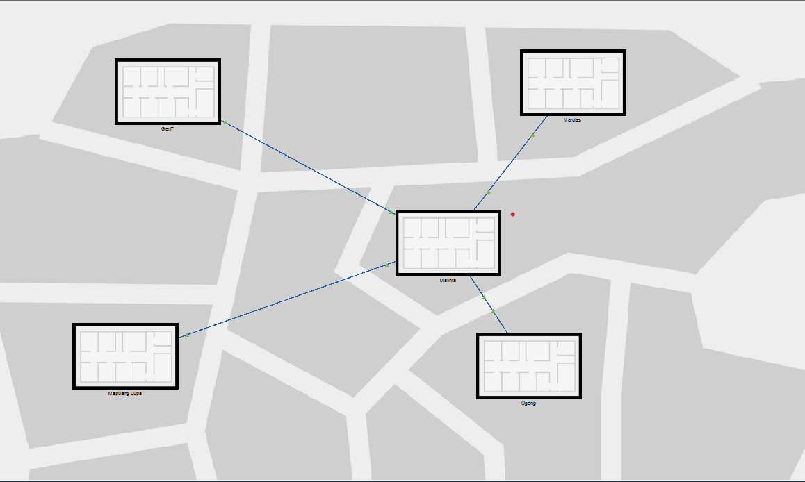
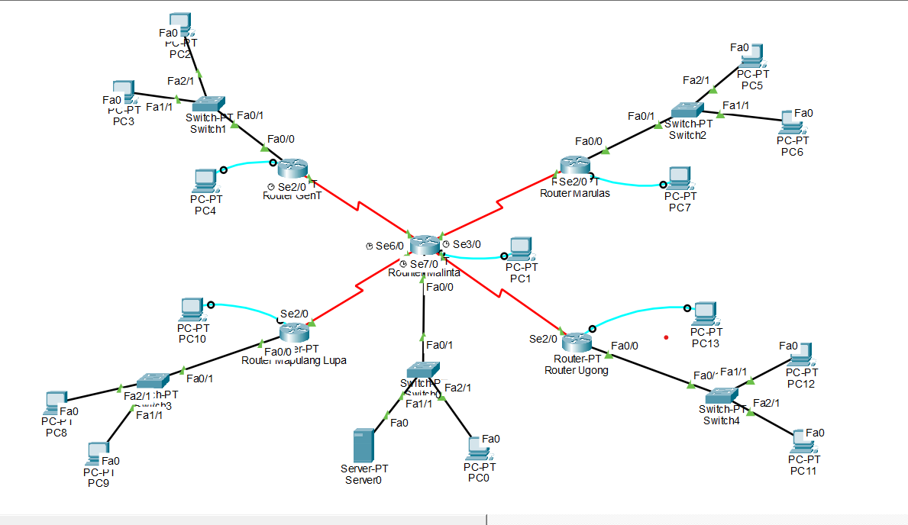
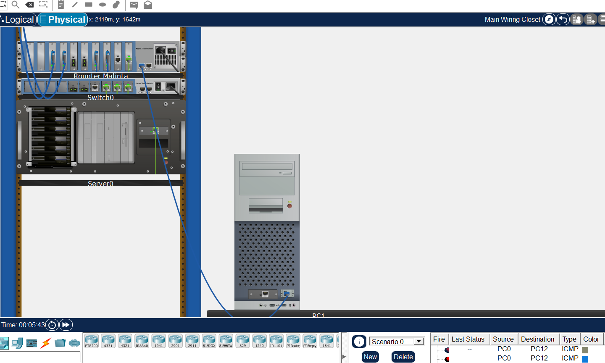

Networking
ValAce Branches Simulation




OVERVIEW
The ValAce Branches Simulation is a comprehensive network infrastructure project designed in Cisco Packet Tracer. It simulates a hub-and-spoke enterprise topology, connecting a main Headquarters (HQ) to multiple departmental branches. The primary goal was a scalable, secure, and highly organized network that supports diverse business functions—including Administration, HR, Payroll, and IT—across different geographical or logical locations.
KEY FEATURES
- Hierarchical Topology: Implemented a robust backbone using five interconnected routers (GenT, Marulas, Mapulang Lupa, Ugong and Malinta) to manage traffic between disparate network segments.
Dynamic IP Allocation: Successfully implemented DHCP Relay Agents across all branch routers, enabling remote hosts to receive IP leases across router boundaries from the central server pool.
Inter-Branch Connectivity: Engineered a multi-router WAN backbone using Serial DCE/DTE links, simulating real-world leased lines between geographical locations.
WHAT I LEARNED
- End-to-End Troubleshooting: By using the "Simulation Mode" in Packet Tracer, I learned how to track a packet’s journey through the OSI model. I practiced identifying exactly where a connection fails—whether it’s a missing route in the routing table or a misconfigured gateway on the client side.
Enterprise Structural Logic: I learned that building a network is about more than just connectivity; it’s about organization. Using clear naming conventions for routers and subnets taught me how to manage a complex environment efficiently.
TOOLS USED
Cisco Packet Tracer